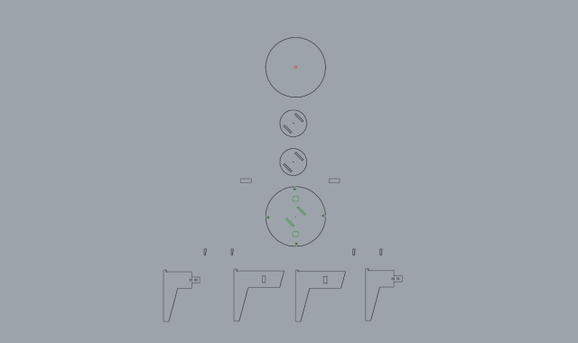

(feat. Anna, Everardo and Jorge)
Crafting a Spinning Table with a CNC Machine
Our team started with an ambitious project: designing an electric pottery wheel for classroom use. However, due to the lack of a powerful motor, we switched to creating a manual spinning table. This shift required us to rethink our design while maintaining the goal of functionality and usability. We decided to match the table's height with a seat another group had made, ensuring compatibility and practicality. We brainstormed and decided on a central threaded bar for the table's rotation, supplemented by small wheels on opposite sides for added stability. This combination ensured smooth and balanced spinning.
We then meticulously drafted the pattern, paying close attention to dimensions and shapes to ensure they were suitable for CNC machining. Creating the gcode was a crucial step, translating our design into a language the CNC machine could understand and execute with precision.

Using the CNC machine, we began cutting the wood according to our design. This phase was both exciting and challenging as it was the first time I used such a machine. We encountered issues with the type of wood we selected, which did not cut as cleanly as we had hoped. Despite these setbacks, we persevered, adjusting our approach and learning valuable lessons about material selection and machine settings.
Assembling the spinning table was a hands-on process that I thoroughly enjoyed. This project highlighted the importance of practical skills in manufacturing, complementing my focus on electronics and data in other areas of the master. The tactile experience of building the table from scratch reinforced my appreciation for the craftsmanship involved in prototyping.
This CNC machining project taught me several important lessons. First, the importance of iteration and flexibility in the design process was evident as we adapted our initial concept due to technical constraints. Second, the experience highlighted the need for a thorough understanding of both the technology and materials used, as different woods react differently to cutting. Third, the project emphasized the value of hands-on learning and practical skills, complementing theoretical knowledge.
Working with the CNC machine was a valuable learning experience. It highlighted the machine's potential and complexity, emphasizing the need for understanding both the technology and materials used. This project also sparked ideas for future improvements, such as experimenting with different materials and refining the design for better functionality and aesthetics.

Best AI Website Maker